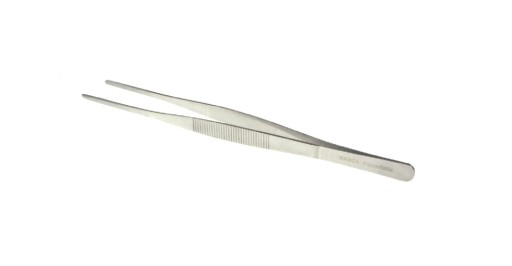
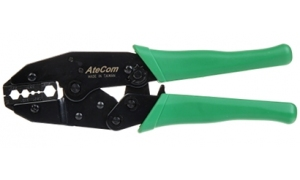

| Podstawowy zestaw narzędzi umożliwiających montaż lub demontaż sprzętu komputerowego | |
|---|---|
| Szczypce wydłużone wygięte - pozwalają na drobne korekty blachy obudowy lub
przytrzymywanie elementów w trudno dostępnych miejscach. |

|
| Szczypce wydłużone proste - umożliwiają mocniejsze dokręcenie np. dystansów
do montażu płyty głównej w obudowie lub przytrzymanie małych elementów. |

|
| Pinceta - umożliwia operowanie niewielkimi elementami np. zworkami, które
wymagają precyzyjnego osadzenia w mało dostępnych miejscach. |
 |
| Szczypce boczne do cięcia - umożliwiają obcinanie końcówek
plastikowych opasek. |
 |
| Szczypce uniwersalne płaskie - pozwalają wyginać
blache lub zaciskać różne elementy. |

|
| Wkrętak krzyżakowy - umożliwiają zamocowanie elementów przy
pomocy wkrętów montażowych. |
|
| Wkrętak gwiazdkowy - wykorzystywany do montazu
przy pomocy śrub typu Torx. |

|
| Uchwyt z końcówkami nasadowymi | |
| Próbnik instalacji elektrycznych - umożliwiający np. wykrywanie
fazy, przewodów pod napięciem czy przerw w obwodach. |

|
| Zaciskarki wtyków i końcówek przewodów, obcinarki i ściągacze
izolacji z przewodów elektrycznych |
 |